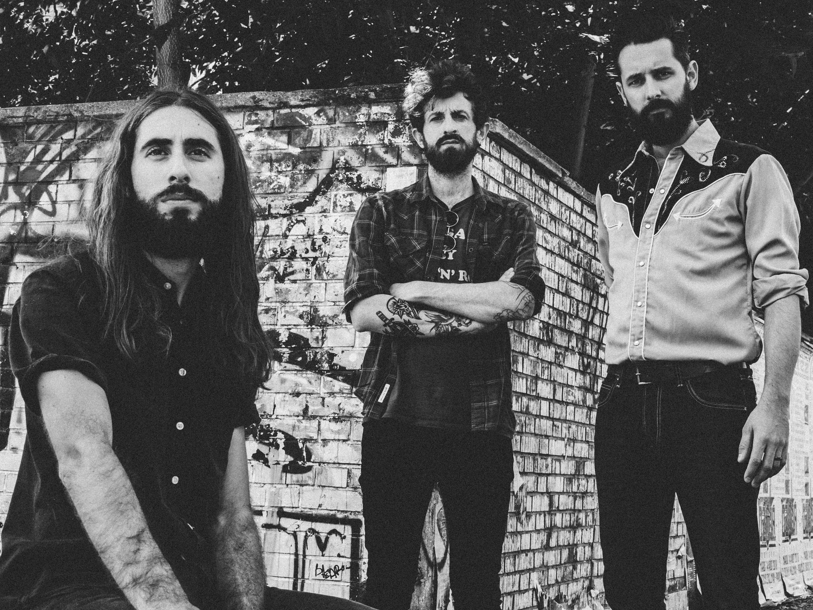

The Cosmic Cowboys
August Eighth 7pm
The Cosmic Cowboys are a three-piece country rock band from Austin, Texas, known for their electrifying live shows and hard-driving sound. The band's songs are filled with stories of heartbreak, love, and life on the road, delivered with a raw and authentic energy that's impossible to ignore. With influences ranging from Waylon Jennings to The Allman Brothers, The Cosmic Cowboys have a sound that's rooted in tradition but always looking forward. They're quickly becoming one of the most exciting bands in the Texas music scene, and it won't be long before they're taking their high-energy show on the road and wowing audiences across the country.
Learn More Here:
Previous Artist
Next Artist